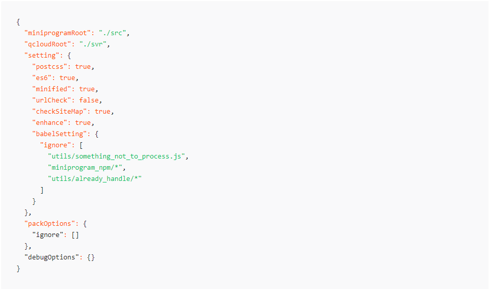

其中，type 可以取的值为 folder、file、suffix、prefix、regexp2、glob2，分别对应文件夹、文件、后缀、前缀、正则表达式、Glob 规则。所有规则值都会自动忽略大小写。
注 1: value 字段的值若表示文件或文件夹路径，以小程序目录 (miniprogramRoot) 为根目录。
注 2: regexp、glob 仅 1.02.1809260 及以上版本工具支持。
debugOptions 用以配置在对项目代码进行调试时的选项。
目前可以指定 debugOptions.hidedInDevtools 字段，用以配置调试时于调试器 Sources 面板隐藏源代码的文件。
hidedInDevtools 的配置规则和 packOptions.ignore 是一致的。
可以在项目根目录使用 project.config.json 文件对项目进行配置。
属性有：miniprogramRoot,qcloudRoot,pluginRoot,compileType,setting,libVersion,appid,projectname,packOptions,debugOptions,scripts